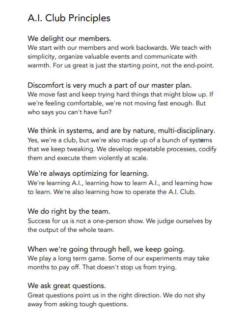
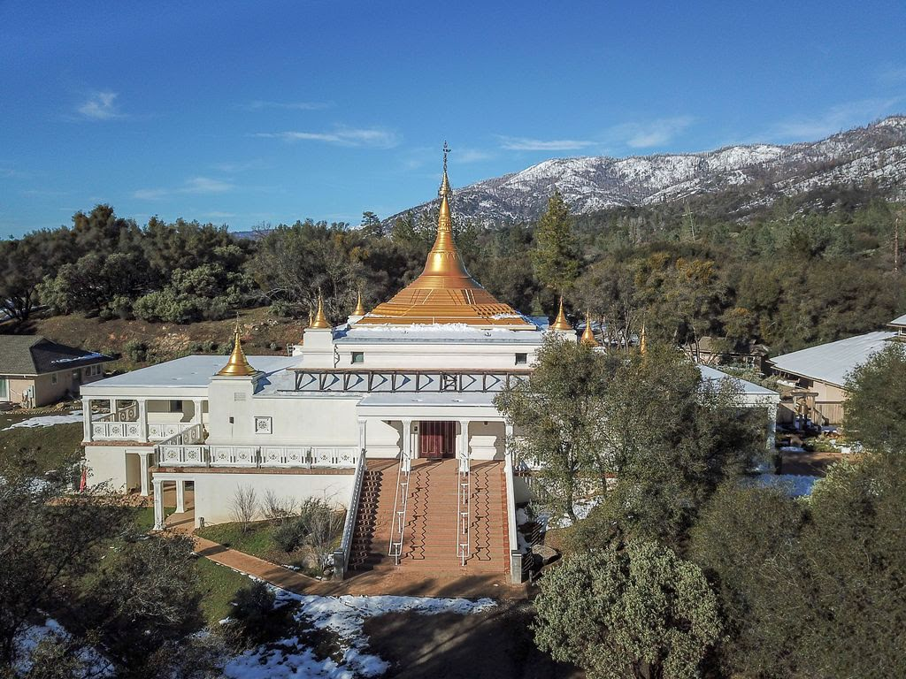

Principles, Experiments & Serendipity
Lessons at 23
For the past two years, I’ve published a post on my birthday. These reviews have been a powerful tool for examining what’s working and what’s not in terms of my principles. Writing down and testing my principles shows me where to focus my efforts in the longer term. Tactics and systems can get things done, but principles are useful in deciding what you should (or should not) be doing in the first place.

Principles I drafted for my college AI Club
This year has been full of developments, both professional and personal. I became the Vice President of the AI club at my college and conducted workshops for several hundred students. I took part in internships, hackathons, and even a meditation retreat. Now, at the beginning of year 23, I'd like to document my learnings within the context of these experiences.
Professional Developments
Being discoverable on the Internet seems to be important in opening up opportunities. I created this blog, but waited over a year while figuring what to write about. Elon Musk has talked about the usefulness of first principles thinking. On my blog, I hope to use this method to make sense of technology and look at how we generate original ideas. I wish I'd started earlier, but now with the foundation in place, I’ll have some freedom to explore. I’m excited to see what I’ll learn.
I've been interning at an automation startup, where I developed a chatbot for Vello, an education non-profit that connects volunteer teachers with students. I've also been working with entrepreneurs around Phoenix on various projects. I absolutely love being able to create new things.
This year showed me the powerful benefits of working deeply on a single task for extended periods of time. I’ve often felt that a lack of discipline is one of my major bottlenecks. When pursuing several projects at once, I’ve found that everything I work on suffers. My expectations also end up being way offtrack. But now, with systems and tools in place, when one major project occupies my thoughts, it gets done in the expected time, and that feels phenomenal.
Personal Developments
In the past year, I participated in 10 hackathons. My roles ranged from back-end engineering to product management. I learned a lot about developing end-to-end software, using quick prototyping and rapid feedback to improve results. As a bonus, I also won a bunch of goodies, including an iPad, bluetooth headphones, an HD monitor and also a drone.
Through the hackathons, I was invited to Luminosity Lab, the skunk-works of my college. I joined a team working on NASA's big idea challenge to develop a concept for a lunar lander. We later ended up winning a sponsorship to build our model, one of 8 teams from 300 colleges across the country.
I spent 10 days at a silent meditation retreat near the Yosemite mountains of California. I wanted to try something difficult, and sitting still for 8-10 hours a day sounded like the right kind of challenge. Starting out at 45-minute group sittings in Phoenix, I dialed it upto 2 hours before heading to the retreat. The experience was unlike anything I’ve done before. The food was phenomenal, the natural views breathtaking. Meditation may not be a solution to everything, but it provides psychological space and puts things in perspective. If you've already been meditating on and off, I’d highly recommend trying a retreat.

Dhamma Mahavana: 10 day silent Vipassana retreat
For fun, I’ve been practicing chess, learning to illustrate in Procreate, and watching quite a few documentaries. I've liked all the documentaries on Kevin Kelly's list. By engaging with the medium more deeply, I’ve come to appreciate the art of screenplay, dialogue, background score and editing.
Finally, the ongoing situation with COVID-19 has affected everyone in 2020. With social distancing, we have been forced into a situation that is far from normal. Staying indoors, avoiding physical contact and spending more time with family has made us question our assumptions about everything from business to happiness. While stuck at home, I’ve actually been enjoying myself, using this time as an opportunity to ramp up my projects and reading.
Moving Forward
At the end of a stimulating year, I still think my effectiveness is at 5-10% of what it could be. I’ve been keeping track of the areas that are the bottlenecks to my growth. Though I’ve done a lot to build up the systems for keeping myself disciplined, healthy and accountable, consistency remains a weak point.
In the coming year, I’ll be consolidating my systems for planning, writing, and knowledge management. But if this year has taught me anything, it’s to keep experimenting with the interesting things and doubling down on the bigger leads. It’s by focusing on your principles that you generate serendipity.